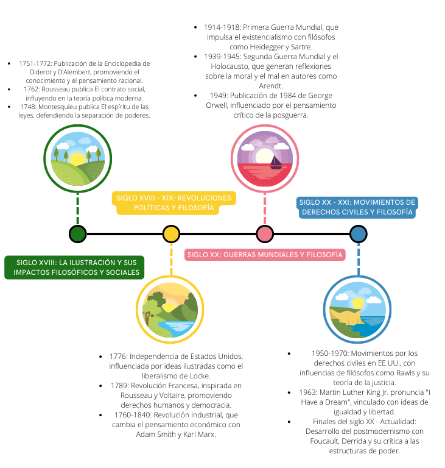

Humanismo es un concepto polisémico que se aplica tanto al estudio de las letras
humanas, los estudios clásicos y la filología grecorromana.
Ruptura con la escolástica
Ruptura con la escolástica” es un ensayo de Jaime Labastida, filósofo y poeta
mexicano, que analiza el trabajo de Agustín Rivera y Sanromán
Metodo Cientifico
El método científico se utilizó por primera vez durante la llamada «Revolución
Científica»
Humanismo
Humanismo es un concepto polisémico que se aplica tanto al estudio de las letras humanas, los estudios
clásicos y la filología grecorromana.
Por otro lado, también se denomina humanismo al «sistema de creencias centrado en el principio de que las
necesidades de la sensibilidad y de la inteligencia humana pueden satisfacerse sin tener que aceptar la
existencia de Dios y la predicación de las religiones
El Humano feliz (Happy Human) es un icono que se ha adoptado como símbolo
internacional del humanismo secular.
El humanismo es, en resumen, un componente de una gran variedad de sistemas filosóficos más específicos y de
varias escuelas de pensamiento religioso.
Mucho antes de ser ampliamente empleado en términos políticos, el
humanismo es un concepto propio de la historia de la filosofía, renovada con el Renacimiento, asociado en
particular con el movimiento representado por Erasmo, Michel de Montaigne o incluso por Guillaume Budé, a
quienes corresponde el honor de haberse interesado a la vez por la literatura de la antigüedad grecolatina y
la reflexión personal.
Ruptura con la escolástica
Ruptura con la escolástica” es un ensayo de Jaime Labastida, filósofo y poeta mexicano, que analiza el
trabajo de Agustín Rivera y Sanromán
En este ensayo, Labastida destaca que los juicios críticos de Rivera y Sanromán se basan en documentos
históricos.
Jaime Labastida.
Subraya que los autores que pusieron en relieve el atraso de la Nueva España en asuntos de ciencia y
filosofía seguían el método escolástico tradicional.
Señala que estos autores empleaban el silogismo como procedimiento de demostración, ignoraban el método
experimental en física y medicina.
Historia (Linea del tiempo)

Linea del tiempo
Crítica de la razón pura de Kant
La Crítica de la razón pura (en alemán: Kritik der reinen Vernunft) es la obra principal del filósofo prusiano
Immanuel Kant.
Se trata de una indagación trascendental acerca de las condiciones epistémicas del conocer humano (la
situación y
capacidad de los humanos para conocer asuntos de diverso tipo), cuyo objetivo central es lograr una respuesta
definitiva
sobre si la metafísica puede ser considerada una ciencia.
Portada de la primera edición (1781).
En esta obra, Kant intenta la conjunción de racionalismo y empirismo, haciendo una crítica de las dos
corrientes
filosóficas que se centraban en el objeto como fuente de conocimiento, y así, dando un «giro copernicano» al
modo de
concebir la filosofía, estudiando el sujeto como la fuente que construye el conocimiento del objeto, a través
de la
representación que el sujeto, mediante la sensibilidad inherente a su naturaleza, toma del objeto.
Entre las resistencias que encontró la obra se puede citar que Pío VIII, antes de llegar a papa católico, como
prefecto
de la Congregación del Índice prohibió bajo amenaza de excomunión la lectura de la Crítica de la razón pura
(decreto del
8 de julio de 1827).
Metodo Cientifico
El método científico se utilizó por primera vez durante la llamada «Revolución Científica»
El método combinaba conocimientos teóricos como las matemáticas con la experimentación práctica mediante
instrumentos científicos, análisis y comparaciones de resultados
Experimento de la bomba de aire de Hooke y Boyle
El objetivo de este método científico era no solo aumentar el conocimiento humano, sino hacerlo de forma que
beneficiara prácticamente a todos y mejorara la condición humana.
Los pensadores siempre habían realizado experimentos, desde figuras antiguas como Arquímedes (287-212 a.C.)
hasta los alquimistas de la Edad Media, pero sus experimentos solían ser fortuitos y muy a menudo los
pensadores intentaban demostrar una idea preconcebida.
Personajes de la Filosofia
René Descartes
Fue un filósofo, matemático y físico francés considerado el padre de la geometría analítica y la filosofía
moderna,así como uno de los protagonistas con luz propia en el umbral de la revolución científica.
John Locke
John Locke fue un filósofo y médico inglés, considerado como uno de los más influyentes pensadores del empirismo ingles britanico,
y conocido como el «Padre del Liberalismo Clásico». Fue de los primeros empiristas británicos
David Hume
Fue un filósofo, historiador, economista y ensayista escocés. Constituye una de las figuras más importantes de la
filosofía occidental moderna y de la Ilustración escocesa.
Immanuel Kant
Fue el primero y más importante representante del criticismo y precursor del idealismo alemán. Es uno de los pensadores
más influyentes de la Europa moderna y de la filosofía universal.
René Descartes
Fue un filósofo, matemático y físico francés considerado el padre de la geometría analítica y la filosofía
moderna,así como uno de los protagonistas con luz propia en el umbral de la revolución científica.
Durante la Edad Moderna era también conocido por su nombre latino Renatus Cartesius. Descartes nació el 31 de marzo de
1596 en la Turena, en La Haye en Touraine, hoy en día llamada Descartes en su honor, después de que su madre abandonara
la ciudad de Rennes, donde se había declarado una epidemia de peste bubónica.
La casa donde nació Descartes en La Haye en Touraine.
Después de la temprana desaparición de su madre, Jeanne Brochard, a pocos meses después de su nacimiento, quedó al
cuidado y crianza de su abuela, su padre y su nodriza.
En septiembre de 1649, la reina Cristina de Suecia llamó a Descartes a Estocolmo. Allí murió de una neumonía el 11 de
febrero de 1650, a los 53 años de edad. Actualmente se pone en duda si la causa de su muerte fue la neumonía.
En 1980, el historiador y médico alemán Eike Pies halló en la Universidad de Leiden una carta secreta del médico de la
corte que atendió a Descartes, el neerlandés Johan Van Wullen, en la que describía al detalle su agonía. Curiosamente,
los síntomas presentados no eran propios de una neumonía.
Tras consultar a varios patólogos, Pies concluyó en su libro El homicidio de Descartes, documentos, indicios, pruebas,
que la muerte se debía a envenenamiento por arsénico.
John Locke
John Locke fue un filósofo y médico inglés, considerado como uno de los más influyentes pensadores del empirismo ingles
britanico, y conocido como el «Padre del Liberalismo Clásico». Fue de los primeros empiristas británicos
Nació el 29 de agosto de 1632, en una pequeña cabaña con techo de paja cerca de la iglesia en Wrington (Somerset), a
unos doce kilómetros de Brístol. Fue bautizado el mismo día. El padre de Locke, también llamado John, era un abogado
rural y empleado de los Juzgados de Paz en Chew Magna
La cabaña donde Locke nació.
En 1647, Locke fue enviado a la prestigiosa Westminster School en Londres, bajo el patrocinio de Alexander Popham, un
miembro del Parlamento y exjefe de su padre.
Se le otorgó su licenciatura en 1656 y una maestría en 1658. Obtuvo un título de Medicina en 1674, porque estudió
profundamente la Medicina durante su estancia en Oxford y trabajó con varios científicos y pensadores notables como
Robert Boyle, Thomas Willis, Robert Hooke y Richard Lower.
Murió el 28 de octubre de 1704, y fue enterrado en el cementerio de la localidad de High Laver,al este de Harlow
(Essex), donde había vivido en la casa de sir Francis Masham desde 1691. Locke nunca se casó ni tuvo hijos.
David Hume
Fue un filósofo, historiador, economista y ensayista escocés. Constituye una de las figuras más importantes de la
filosofía occidental moderna y de la Ilustración escocesa.
David Hume nació en Edimburgo (Escocia) el 7 de mayo de 1711 en una familia perteneciente a la pequeña nobleza de la
frontera con Inglaterra. Fue el menor de tres hermanos. Su padre, abogado, falleció en 1714 cuando David era aún pequeño
y su madre se fue entonces a vivir a Ninewells para criar a sus hijos con su cuñado.
Tumba de David Hume en Edimburgo.
En 1744 su candidatura a la cátedra de moral y filosofía pneumática de la Universidad de Edimburgo fue rechazada a causa
de los enemigos que su pensamiento radical le había granjeado
En 1752 logró el trabajo de bibliotecario del Colegio de abogados de Edimburgo y se embarcó en la escritura de una
Historia de Inglaterra en seis volúmenes. El primero, consagrado a los Estuardo, fue viva y unánimemente criticado; el
segundo (1756) estudiaba el periodo posterior a la muerte de Carlos I de Inglaterra hasta la Revolución Gloriosa de 1688
A partir de 1775 comenzó a sentir los efectos de un tumor intestinal, y un año más tarde falleció a la edad de sesenta y
cinco años. Junto a él, en su lecho de muerte, se encontraba su amigo Adam Smith, quien contó cómo Hume bromeaba
imaginando qué excusa dar a Caronte cuando se lo encontrara.
Se atrevía a tratar la materia de forma liviana un hombre convencido en verdad de su inminente fallecimiento y por demás
satisfecho de que la muerte no fuera más que simple aniquilación.
Immanuel Kant
Fue el primero y más importante representante del criticismo y precursor del idealismo alemán. Es uno de los pensadores
más influyentes de la Europa moderna y de la filosofía universal.
Immanuel Kant fue bautizado como Emanuel pero cambió su nombre a Immanuel tras aprender hebreo. Nació en 1724 en
Königsberg (antiguamente Prusia, desde 1946 Kaliningrado, Rusia). Era el cuarto de nueve hermanos, de los cuales solo
cinco alcanzaron la adolescencia.
La residencia del filósofo Immanuel Kant en Königsberg, 1842.
Desde el principio de sus estudios, Kant mostró gran aplicación en sus investigaciones. Primero fue enviado al Collegium
Fridericianum y después se matriculó en la Universidad de Königsberg en 1740, a la edad de 16 años.[
La reputación de Kant aumentó gradualmente durante la década de 1780, gracias a una serie de obras importantes: el
ensayo Respuesta a la pregunta: ¿Qué es Ilustración? (Beantwortung der Frage: Was ist Aufklärung?) de 1784; la
Fundamentación de la metafísica de las costumbres (Grundlegung zur Metaphysik der Sitten), de 1785 (su primera obra
sobre filosofía moral), y Principios metafísicos de la ciencia natural (Metaphysische Anfangsgründe der
Naturwissenschaft), de 1786.
Su salud había venido empeorando desde hacía mucho tiempo. Tuvo arteriosclerosis cerebral y en el invierno de 1803 tenía
dolores estomacales, pérdida de memoria y sueño.
Murió a las once de la noche del domingo 12 de febrero de 1804 en Königsberg, murmurando la palabra «Genug»
(«suficiente», «basta») antes de expirar.